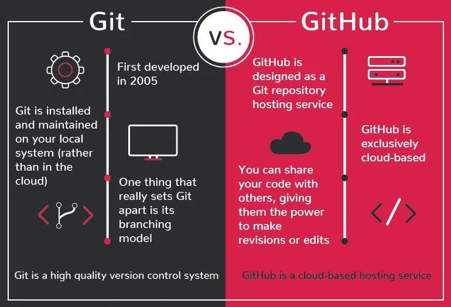

For months after I started coding, I genuinely thought Git and GitHub were the same thing. Every time someone said "push your code to GitHub" — I just nodded like I understood. I had no idea what was actually happening. Nobody explained it. If someone asked you right now — what's the difference between Git and GitHub — could you answer confidently? Most developers who've been coding for months still can't. That ends today.
At the start of this journey, I kept seeing both words everywhere — Git, GitHub, GitHub Desktop, git push, git clone — and I assumed they were all the same thing. I used them interchangeably for weeks. Nobody corrected me.
Then one day a senior developer asked me to "push the code to GitHub using Git" — and I just stared at the screen. That was the moment I realized I had been using both tools without actually understanding either one. I don't want that to happen to you. This article will fix that.
What is Git?
When you first hear about Git, it sounds like some intimidating, overly complex tool. But in reality, Git is just a version control system that lives entirely on your laptop — no internet connection needed.
It tracks every change, edit, and deletion you make to your code over time. Think of it as a time machine for your projects — if you accidentally break your entire app at 2 AM, Git lets you roll back to a point when everything worked perfectly. This tool was created in 2005 by Linus Torvalds — the same person who built Linux — and it runs entirely through your terminal.
Without Git, one misplaced comma or accidental deletion can permanently destroy weeks of work. With it, you have the freedom to experiment, break things, and learn — without the fear of ruining everything you've built.
What is GitHub?
A lot of beginners mix up Git and GitHub — but they are two totally different things. While Git lives on your laptop, GitHub is a website that lives on the internet.
The easiest way to understand it — think of GitHub as Google Drive, but built specifically for developers. It's where you upload and store your Git repositories so they're safely backed up online. It lets you share code with the world, collaborate with other developers, and showcase your work to employers.
Your GitHub profile is your living developer portfolio — tech employers check your GitHub before they think about hiring you. One more thing worth remembering — GitHub did not create Git. Microsoft owns GitHub today, while Git remains a free, independent tool. Git is the engine. GitHub is the showroom.
The Exact Relationship Between Them
Git works on your laptop, tracking every code change locally. GitHub lives online, waiting to receive those changes as a secure cloud backup. You use Git commands in your terminal to "push" your local code up to GitHub.
You can absolutely use Git without GitHub — but almost every developer uses both together. Here's the simplest way to remember it:
Git is your private diary where you log your progress. GitHub is the safe where you store that diary so it never gets lost.

The 3 Git Commands Every Beginner Must Know
When you open the terminal for the first time, it feels like staring at a wall of complicated commands. Here's the truth — you only need three commands to start, and they'll cover 80% of your daily workflow.
# Step 1 — Stage your changes
git add .
# Step 2 — Save a snapshot with a message
git commit -m "your message here"
# Step 3 — Upload to GitHub
git push- git add . — tells Git to track all your recent changes in the current folder
- git commit -m "message" — takes a permanent snapshot of your code with a short description of what you did
- git push — uploads that snapshot from your laptop to your GitHub repository online
Don't worry about branching, merging, or rebasing yet. Everything else can wait until you're working on bigger projects. Lock these three down until they feel like muscle memory.
Why GitHub is Non-Negotiable for Your Career
You can have the most polished resume in the world — but if your GitHub profile is empty, most tech employers will look right past you. Almost every modern software job application asks for your GitHub link, using it as a direct window into how you write code, organize files, and solve problems.
Contributing to open-source projects on GitHub counts as real work experience. Freelance clients on Fiverr and Upwork check your repositories before trusting you with paid projects. When an interviewer sees a steady grid of green commit dots on your profile, it instantly shows your discipline and consistency. That matters more than a certificate.
Start right now — push every project, every practice file, every tiny bug fix to GitHub. Consistency is what gets you hired. Believe me.
Open your terminal right now and type git --version to check if Git is installed. If it throws an error — head to git-scm.com and download it today. Then go to github.com, create a free account, write a basic index.html file, run your first commit, and push it live. Don't wait until you feel ready. Your GitHub journey starts today — not tomorrow.